Mechanical Engineering, Control and Dynamics Minor, California Institute of Technology
I am a rising third-year at Caltech studying mechanical engineering with a minor in Control and Dynamics. My interests are in space robotics and autonomy, and I have worked at the intersection of dynamics, optimization, and autonomy. At Caltech, I am President of Caltech Air and Outer Space, where I lead the CubeSat design and contribute to the rover team; I grew the club from an initial few members to over forty active members. I split my time between the Bay Area and Los Angeles.
MIT Robotic Exploration Lab - Differentiable Model Predictive Control and Data-Enabled Predictive Control on Quadrotor Hardware
Visiting Summer Undergraduate Research Fellow, advised by Professor Zachary Manchester
June 2026 to Present
Model-based controllers guarantee safety but degrade under real-world aerodynamic disturbances they were never modeled to handle; purely data-driven controllers adapt to those disturbances but offer no safety guarantees or physical interpretability. I built and flight-tested two controllers on a Crazyflie 2.1 quadrotor that try to close that gap: a Model Predictive Controller whose cost and dynamics parameters are learned end-to-end by differentiating through the closed-loop rollout, and a second, model-free controller built with Data-Enabled Predictive Control that predicts directly from recorded trajectory data through a Hankel matrix, with no explicit dynamics model at all. Both run in real time onboard the aircraft, and the work is being written up for a differentiable-control paper.
The Crazyflie 2.1 in flight over the motion-capture testbed
State estimation and dynamics
The estimation layer fuses absolute position from a VICON motion-capture system with linear velocity estimated onboard by an Extended Kalman Filter operating on IMU measurements, producing the twelve-state estimate (position, velocity, attitude, angular rate) the controller consumes. I kept this as a fixed, inspectable state vector rather than a learned latent representation, an interpretability-versus-performance tradeoff that runs through the whole project.
Constrained optimization and differentiability
The control layer solves a Quadratic Program at every timestep: minimize a quadratic tracking-and-control-effort cost subject to the linearized dynamics and actuator limits, using Clarabel as the solver.
I implemented the full closed-loop rollout, estimator, solve, simulated dynamics step, as a differentiable computation graph in JAX using qpax for differentiable quadratic-program layers, then backpropagated trajectory-tracking loss through the entire rollout to compute gradients of that loss with respect to the cost-function weights.
Used stochastic domain randomization, randomizing physical parameters such as mass and center-of-mass offset across rollouts during training, so the learned parameters generalize past the nominal dynamics model instead of overfitting to it.
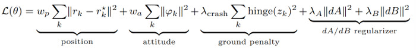
The training loss functional used for the gradient-descent parameter search
Hardware results
Deployed both the hand-tuned and gradient-descent-learned Model Predictive Control parameter sets onboard the Crazyflie over ROS2 and Crazyswarm2 for a hover-to-target flight test with an unmodeled mass attached to the airframe, to stress-test generalization beyond the nominal dynamics model.
Both parameter sets saturate available thrust under the added mass, but the gradient-descent-learned parameters still reach a closer approach to the target, 0.41 meters versus 0.89 meters, and a higher peak altitude than the hand-tuned parameters; this is a directional result given both controllers hit their actuator limits.
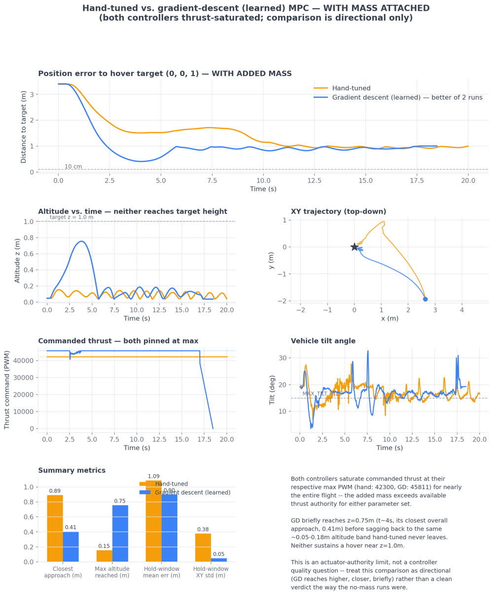
Hand-tuned versus gradient-descent-learned Model Predictive Control, with an unmodeled mass attached
Data-Enabled Predictive Control, a model-free alternative
Collected fifteen Crazyflie trajectories from varied initial conditions to a hover setpoint and used them to build an offline Hankel-matrix data predictor, replacing the explicit dynamics model in the Quadratic Program entirely with a data-driven prediction built directly from recorded input and output trajectories.
Constructed and compared three Hankel-matrix variants to study the conditioning-and-accuracy tradeoff: trimming the hover portion of each trajectory, adding Gaussian process noise only at the hover setpoint, and adding noise throughout the full trajectory; noise everywhere gave the best-conditioned matrix and the lowest prediction error at both a one-step and full-horizon prediction window.
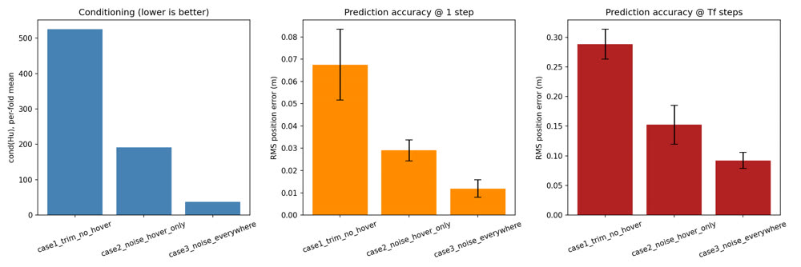
Data-Enabled Predictive Control Hankel-matrix conditioning and prediction accuracy across construction strategies
In parallel, I also built a two-wheel self-balancing inverted-pendulum testbed to prototype and validate Proportional-Integral-Derivative control, Linear-Quadratic Regulator control, and Kalman and Extended Kalman Filter estimators, including a controllability and observability analysis using the Kalman rank test, before carrying lessons over to the quadrotor controllers above.
Caltech Autonomous Robotics and Control Laboratory - Probabilistic Models for Spacecraft Camera Fault Detection, Isolation, and Recovery
Undergraduate Researcher, advised by Professor Soon-Jo Chung
July 2025 to Present
A spacecraft or rover operating multiple cameras needs to determine, in real time, whether a given camera has failed and which fault occurred, before it can safely fall back to a degraded operating mode. I am building the statistical models behind that decision and framing sensor-checking itself as an active information-gathering problem, so the system decides what to check next rather than passively classifying faults after the fact. I generated the training and evaluation dataset myself on Caltech's spacecraft motion flat floor, the largest facility of its kind at a university, and reprocessed it multiple times over the past year to build in explicit causal structure.
What I modeled and coded
Built the full data-generation pipeline in ROS2 and Python: flew ten labeled trajectories on the flat floor under camera fault hypotheses including lens blur from rapid maneuvers, partial lens block from debris or misalignment, and glare, and computed six reliability metrics (feature count, image sharpness, brightness statistics, contour geometry) from consecutive image pairs at every frame.
Added an explicit observability Gramian check so a fault probability is only assigned when the visual state is mathematically informative, and grounded each fault hypothesis in environmental variables derived from VICON, such as whether the camera's optical axis geometrically intersects a known wall or asteroid bounding box, rather than inferring faults from raw pixel statistics alone.
Implemented and benchmarked two competing probabilistic model families for fault classification: a class-conditional Gaussian inverse model, a closed-form, fully interpretable baseline that assumes Gaussian likelihoods per fault class, and a Conditional Neural Spline Flow, a normalizing-flow architecture that learns a more flexible, non-Gaussian conditional density at the cost of interpretability.
Tuned the Neural Spline Flow through four iterations, increasing spline bins and coupling-layer depth, and validated the improvement with bootstrap confidence intervals and Cohen's kappa agreement scores rather than a single accuracy number.
Results
The tuned Neural Spline Flow reached 85.0 percent balanced classification accuracy across four fault classes, versus 61.7 percent for the Gaussian baseline, a 23.3 percentage point improvement with a bootstrap 95 percent confidence interval of positive 20.3 to positive 26.2 percentage points, confirming the gap is real rather than noise.
Also tested whether a temporal window of several consecutive frames would help; it closed most of the gap for the Gaussian model but consistently hurt the Neural Spline Flow, so the best-performing configuration uses no temporal window at all.
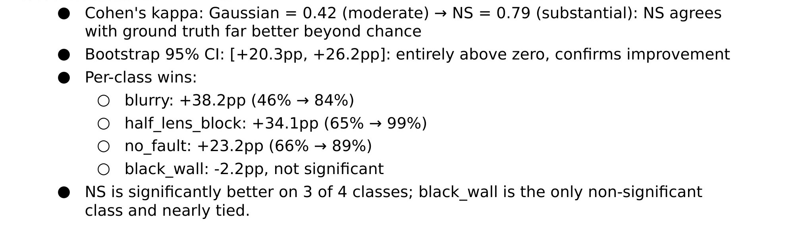
Neural Spline Flow versus Gaussian baseline, no temporal window: 85.0 percent versus 61.7 percent balanced accuracy
Skills
Normalizing flows, Bayesian and probabilistic modeling, causal reasoning, observability analysis, information theory, statistical hypothesis testing, ROS2, Python, MATLAB
Michigan Tech Mobile Robotics Lab - Safe LiDAR Perception Framework for Mars Rover Navigation in Dust Storms
Undergraduate Researcher, advised by Professor Nathir Rawashdeh
2024 to 2025
Mars experiences local, regional, and planetary dust storms year-round that scatter and absorb LiDAR signal, degrading point-cloud accuracy by up to 35 percent and risking a rover missing a hazardous rock. Current rover autonomy depends on human-selected waypoints from Earth because there is no onboard mechanism to detect when LiDAR perception has degraded. I presented this work at the Sigma Xi Student Research Showcase, where it won Second Place in the Undergraduate Division and the Interdisciplinary Engineering Award.
LiDAR and camera sensor fusion, MATLAB, statistical modeling, point-cloud processing, terrain degradation analysis
Michigan Tech Mobile Robotics Lab - Autonomous LiDAR-SLAM Disinfection Robot for Tribal Fish Hatcheries
Undergraduate Researcher, advised by Professor Nathir Rawashdeh
June 2023 to November 2025
I built the real-time mapping and localization software for a mobile robot that autonomously navigates and disinfects fish hatchery tank rooms for the Keweenaw Community in Michigan, funded by a $1,000 DevelopSpace Grant. The robot has no pre-built map of the tank room, so it has to construct one and localize against it as it moves; I combined a LiDAR-based Simultaneous Localization and Mapping pipeline with monocular visual odometry to make that work reliably in the field rather than only in a lab mockup.
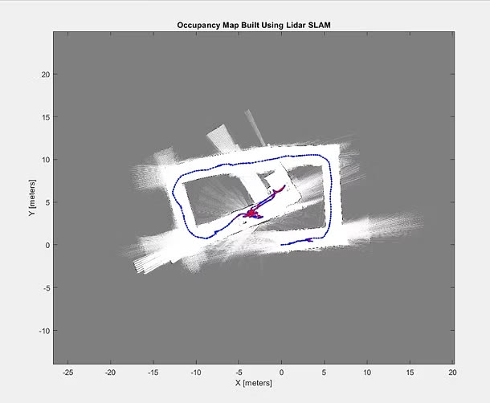
Occupancy map built from the LiDAR-SLAM pipeline, with the recovered robot trajectory overlaid
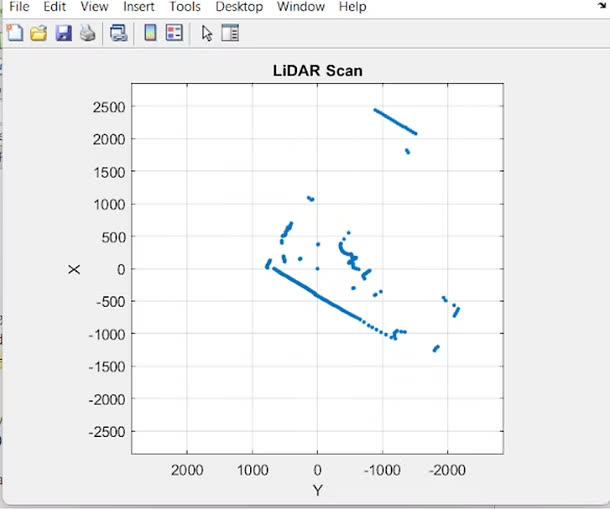
A single raw LiDAR scan, before integration into the occupancy map
What I modeled and coded
Used a YD-G4 LiDAR sensor to generate a live three-dimensional point cloud, then built the two-dimensional occupancy grid shown above from it in MATLAB's SLAM and Navigation Toolboxes to identify which areas of the tank room the robot could actually drive through.
Implemented loop closure and pose-graph optimization so the map stays consistent as the robot revisits the same area from a different heading, instead of drifting.
Added monocular visual odometry as a second, independent motion estimate: frame-to-frame feature tracking from the onboard camera estimates the robot's translation and rotation, which I used to cross-check and correct the LiDAR-only pose estimate.
Field-tested the full pipeline directly in hatchery tank rooms, iterating on parameter tuning against real reflective-water and metal-tank geometry, which behaves very differently from a clean lab environment.
Skills
Simultaneous Localization and Mapping, monocular visual odometry, point-cloud processing, pose-graph optimization, MATLAB (SLAM and Navigation Toolboxes)
UC Berkeley Mechanical Systems and Control Lab - Learning-Based Manipulation of Deformable Objects with Industrial Robotic Arms
Undergraduate Researcher, advised by Professor Masayoshi Tomizuka, with PhD candidate Changhao Wang
October 2022 to May 2023
Cloth has effectively infinite degrees of freedom, so classical rigid-body control breaks down; there is no small, fixed set of joint angles that describes its state. I worked on getting simulated industrial robotic arms to manipulate cloth by building the physics simulation and tuning a Graph Neural Network that represents the cloth's state well enough for a control policy to act on.
What I modeled and coded
Built and fine-tuned a physics simulation environment in PyBullet and PlasticineLab to model simulated KUKA arms manipulating a cloth object, since real-hardware deformable-object trials are slow and hard to instrument.
Represented the cloth as a mesh graph and optimized the hyperparameters of a mesh Graph Neural Network (message-passing layer count, hidden dimension, node and edge feature design) so the model could predict how the cloth's mesh deforms under a given manipulation action; the near-infinite degrees of freedom get compressed into a graph the network can reason over.
Read the current literature on deformable-object manipulation to inform those modeling choices and worked directly with a PhD candidate and the lab's Principal Investigator on experimental design.
As President, I rebuilt Caltech's AIAA student branch from a few members into a program of more than forty active members running CubeSat and lunar-rover flight-hardware projects within a year, and helped the club secure the funding and industry partnerships that made them possible. The projects below are where I did direct engineering work.
Caltech Air and Outer Space - CoverGuard: Diagnosing Cover-Crop Failure from Orbit
NASA Space to Soil Challenge
2025 to 2026, top-10 finalist, pitched at NASA Headquarters
I helped design a student-built 3U CubeSat that uses onboard machine learning and multispectral imaging to detect when a cover crop has failed, using imagery an orbiting satellite can already see rather than requiring a farmer to inspect the field directly. The entry placed in the top 10 of NASA's Space to Soil Challenge, earning a travel prize to pitch the mission at NASA Headquarters.
What I did
Contributed to the onboard classification pipeline: a LightGBM classifier trained on imagery from a MANTIS multispectral imager, flagging cover-crop failure signatures directly from the satellite's own data rather than downlinking raw imagery for ground processing.
Built the data pipeline around NASA's Harmonized Landsat Sentinel and OPERA satellite data products to source and validate training imagery against known ground conditions.
Helped develop the mission pitch, figures, technical narrative, delivery, that carried the team into the competition's top 10 and a pitch slot at NASA Headquarters.
Skills
LightGBM, multispectral imaging, remote sensing, CubeSat systems
Caltech Air and Outer Space - NASA Lunabotics: Lunar Regolith Excavator
Mechanical Subsystem Lead
2025 to 2026, competed at Kennedy Space Center
I designed the excavation subsystem for an autonomous lunar regolith excavator and led the twenty-person Mechanical Subsystem team through Caltech's first-ever entry into NASA's Lunabotics competition. The rover has to dig into and pile a berm of lunar-regolith simulant under real mechanical and power constraints, not just move across the surface; that excavation mechanism was the hardest single subsystem to get right, and mine.
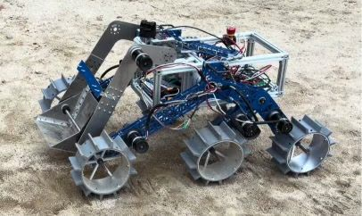
The Lunabotics rover, with the custom excavation arm and gripper I designed
What I did
Designed a custom gripper and berm-loading arm for the excavation subsystem, engineered to move and pile regolith simulant within the competition's mechanical and power budget.
Led the twenty-person Mechanical Subsystem through design, fabrication, and integration, coordinating directly with the electrical and software subsystems for Caltech's first-ever entry into the competition.
Managed logistics and grant funding, including AIAA San Gabriel Valley Section support, to get the team and hardware to Kennedy Space Center for competition.
Skills
Excavation mechanism design, CAD, team leadership, systems integration
Caltech Air and Outer Space - GLOBO Mission: High-Altitude CubeSat Launch
Mission Lead
2024 to 2025, launched, featured by Caltech News
I led a fifteen-member team of mostly first-year students through the full lifecycle of a low-cost, high-altitude CubeSat payload, from design to a launch that reached 60,000 feet for greenhouse-gas monitoring. Getting a first-year team through electronics, structure, CAD, and live launch operations in one cycle meant I owned both the technical build and the process that let new members actually contribute to flight hardware.
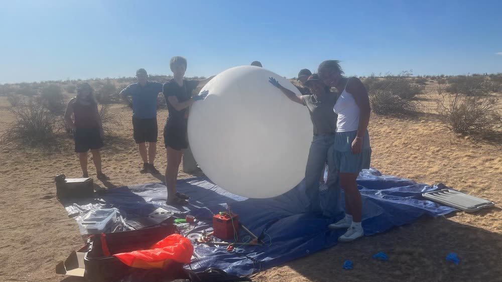
Preparing the high-altitude balloon for launch
What I did
Led the team through the full mission lifecycle: payload design, electronics integration, CAD modeling, and launch-day operations.
Managed the real-time APRS telemetry system used to track the payload in flight and downlink greenhouse-gas sensor data.
Coordinated the full-stack build across electronics, structure, and CAD, structuring the work so first-year members got direct hands-on experience with flight hardware.
Caltech Air and Outer Space - SpectraSat: Spectrometer CubeSat Mission
Project Lead
2025 to Present, launch targeted for April 2026
I am leading a $7,500 CubeSat mission built around a spectrometer payload for light-intensity measurements, taking the project through the same Preliminary Design Review and Critical Design Review gates an industry spacecraft mission would use, presented directly at NASA Jet Propulsion Laboratory. Running the mission on that formal review cadence, rather than an informal club timeline, is what let a student team catch design problems before they became hardware problems.
What I did
Set the mission's Preliminary Design Review and Critical Design Review milestone gates and held the team to them, structuring the review packages the way an industry CubeSat program would.
Directed validation of the payload's light-intensity measurement approach, coordinating between the science requirement and the subsystem teams responsible for structure, power, and data handling.
Presented both design reviews directly to Jet Propulsion Laboratory Chief Engineers and Scientists and incorporated their technical feedback into the next design iteration.
Skills
CubeSat systems engineering, design review process, technical program management
Internships
NASA Jet Propulsion Laboratory - Ion Thruster Grid Erosion Simulation for Deep-Space Propulsion
Summer Research Intern (paid)
June 2025 to August 2025
I built a high-performance-computing simulation of ion thruster grid erosion to predict how long a deep-space thruster will actually last before the grid wears out, a question that directly determines how far a mission can fly. I ran the simulation on the Gattaca2 supercomputer and presented the results to fifteen senior research scientists, including Doctor Swati Mohan.
What I modeled and coded
Developed a high-fidelity, Fortran-based simulation framework that models time-dependent grid erosion using an evolving surface mesh; the grid geometry itself changes over the simulated lifetime as material is sputtered away.
Parallelized the ion-impact routines with OpenMP and ran physically realistic erosion simulations on the Gattaca2 supercomputer.
Authored a technical report translating the simulation output into mission-relevant lifespan conclusions for a senior research audience.
Lockheed Martin Space - Materials Qualification for Spacecraft Launch Survivability
Parts, Materials, and Processes Lab, Engineering Intern (paid)
June 2023 to August 2023
I verified the quality of electrical parts used in spacecraft and launch-vehicle designs against military and space-industry standards, and tested thermal-film materials meant to protect spacecraft solar arrays during the vibration of launch. Getting this wrong means a part fails after it is already in orbit and unreachable, which is why the qualification process is as rigorous as it is.
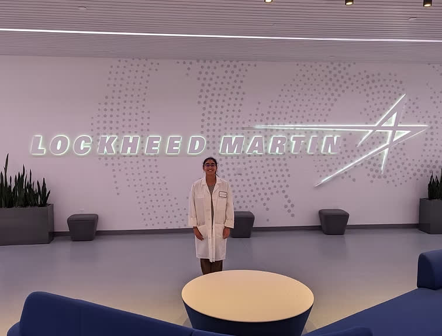
On-site at Lockheed Martin Space
What I did
Tested electrical components, resistors, capacitors, heaters, using a Scanning Electron Microscope and X-ray Fluorescence Spectrometer, and performed decapsulation, grinding, and polishing to physically inspect part construction against military and space-industry standards.
Worked with senior research and development engineers to design test plans and evaluate thermal-film properties for withstanding launch vibration, protecting solar arrays on future spacecraft.
Explored propulsion, hypersonics, and additive manufacturing through internal courses and time in the Additive Design and Manufacturing Center.
Skills
Scanning Electron Microscope and X-ray Fluorescence analysis, ASTM test standards, test plan design
MiFood Tech - Autonomous Food-Processing Robot: Chopper and Fridging Subsystems
I designed the mechanical subsystems for an autonomous food-processing robot's vegetable chopper and fridging unit, working alongside Cornell postdoctoral researchers and industry engineers at a hardware-accelerator startup. The chopper needed to swap blades for different vegetables without a manual tool change, which is what drove the interchangeable-blade mechanism below.
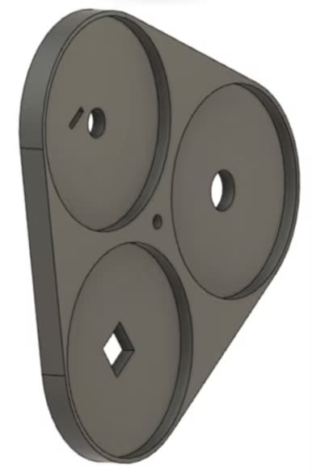
CAD: interchangeable blade-mount disc
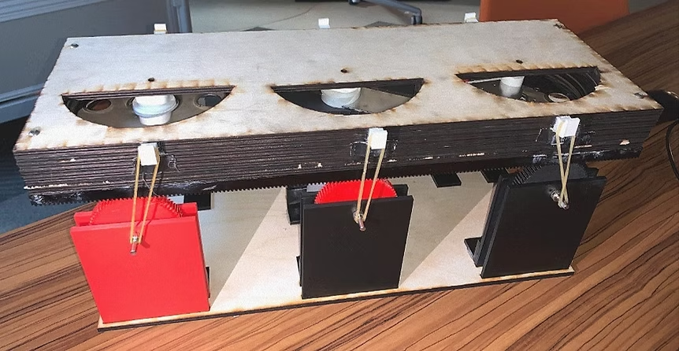
Prototype: the interchangeable-blade chopper mechanism
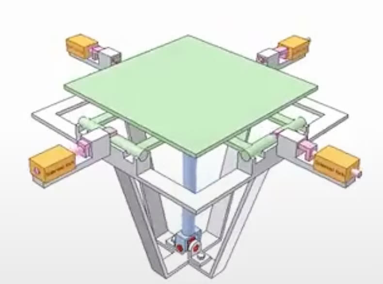
CAD assembly: the rack-and-pinion chopper subsystem
What I modeled and coded
Designed CAD models for the vegetable chopper and fridging subsystem of the autonomous food-processing robot.
Designed a motor, rack, pinion, and gear system that creates an interchangeable-blade mechanism for the chopper, plus a linear-drop mechanism for the chopper subsystem, integrating between subsystem models and designing the assembly casings.
Ran field visits to local restaurants to understand practical constraints in food automation and folded those into the mechanical design.
Skills
CAD, mechanism design, gear and rack-pinion systems, field research
Outwork Automation - Web-Based Cost-Quoting Tool for Small Machine Shops
Engineering Intern (paid)
August 2022 to December 2022
I built the front-end web application small machine shops use to generate cost quotes for machining jobs, entering run time, setup time, and material cost per operation to get a live per-part price estimate. The tool exists so a shop can price a job accurately in minutes instead of guessing, which directly affects whether that job is profitable.
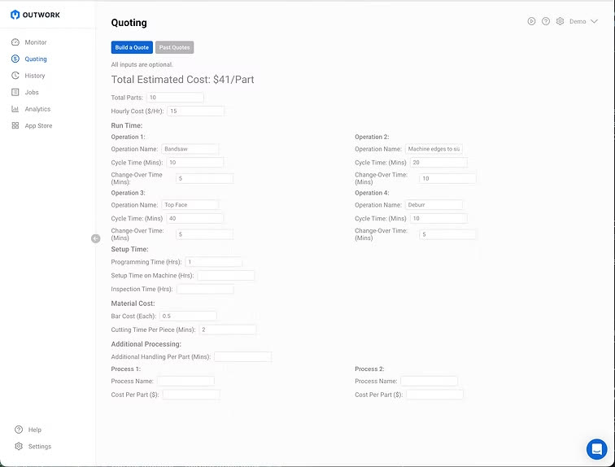
The quoting tool: per-operation run time and cost inputs, live per-part estimate
What I built
Prototyped the interface in Figma, then built the front-end web application in React.js, HTML, and CSS, computing a per-part cost estimate from per-operation run time, changeover time, and material cost inputs.
Applied my own machining and fabrication experience to help decide which machine-tracking metrics the tool should surface to shop owners.
Adapted quickly to changing project scope with minimal supervision under tight timelines, typical of an early-stage startup.
I designed, modeled, and fabricated a two-stage spur gear transmission for a class-wide torque-speed performance contest. Every design decision, gear ratios, tooth profile, shaft layout, came from a SolidWorks model and a MATLAB torque-speed analysis rather than trial and error, and I validated the finished build against instrumented dynamometer data recorded on contest day.
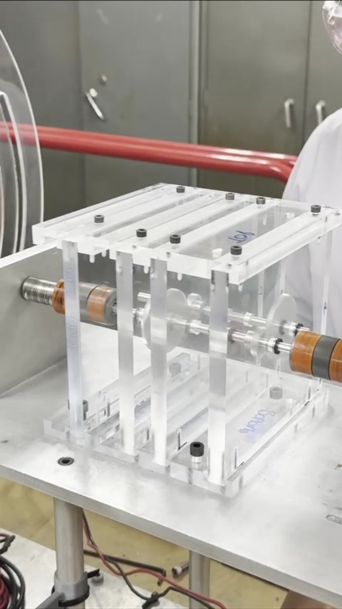
Shaft couplers and gear stages in the acrylic housingThe transmission under load on the dynamometer
What I modeled and coded
Modeled the full two-stage spur gear transmission in SolidWorks, gear tooth profiles, shaft supports, housing, and checked the design against the contest's torque and speed targets before cutting any material.
Wrote a MATLAB torque-speed analysis to choose gear ratios that maximized output performance within the competition's size and material limits, trading top speed for a fast, stable spin-up under load.
Fabricated and assembled the transmission, then documented the full process, design notebook, peer reviews, project debrief, for the course's engineering-documentation requirement.
Results
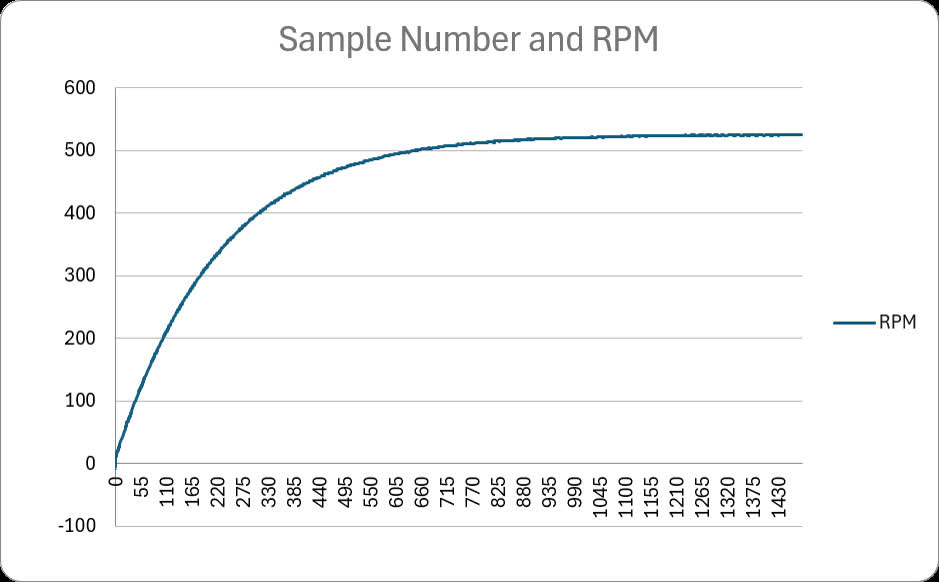
Output RPM versus sample number (200 samples per second), instructor-provided contest data
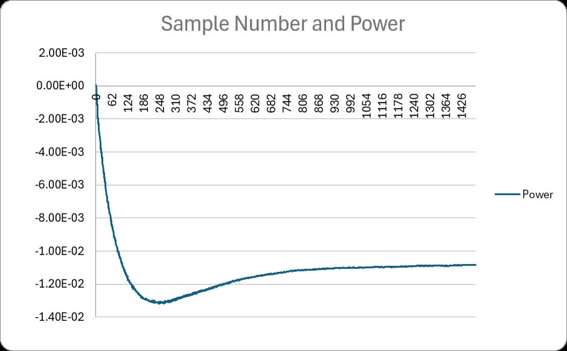
Power versus sample number: start-up transient and steady-state settling
The gearbox reached a steady-state output speed of roughly 525 RPM within about 4 seconds of start-up, with power draw dipping during the initial acceleration transient before settling, consistent with the gear ratios the MATLAB analysis chose to prioritize a fast, stable spin-up over top speed.
Caltech Mechanical Engineering Mechatronics Course - CNC Pen Plotter with a Custom G-Code Interpreter
ME 14
2025, one-week build
I built a two-axis CNC pen plotter from scratch in one week, mechanism, motor driver electronics, and firmware, that parses raw G-code and drives a belt-and-pulley gantry to reproduce two-dimensional line drawings on paper. The one-week timeline meant every failure mode had to be debugged and fixed the same day it showed up.
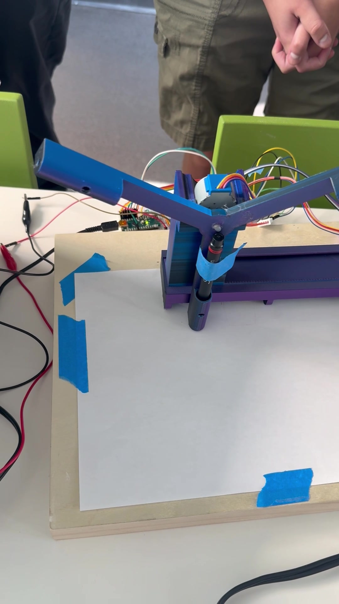
The plotter mechanism: belt-driven gantry, servo pen-lift arm, driver electronics
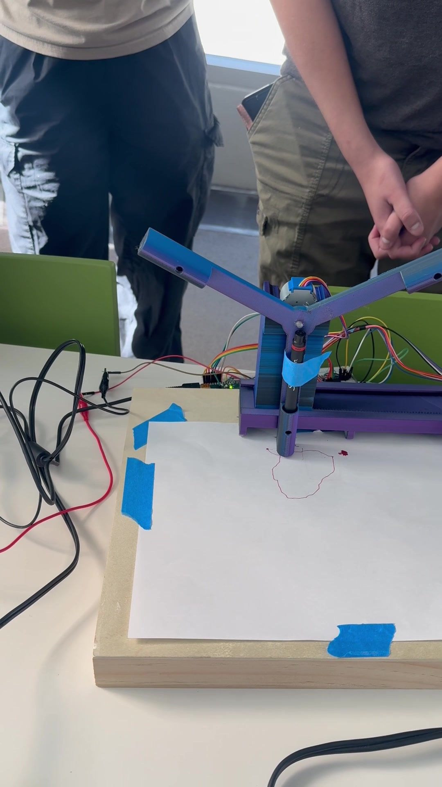
Mid-draw: tracing a G-code path in real time
What I modeled and coded
Designed and 3D-printed a two-axis Cartesian gantry with a belt-and-pulley drive on each axis and a servo-actuated pen-lift mechanism, wired to 28BYJ-48 stepper motors through a breadboarded driver circuit on an Arduino Nano.
Wrote a G-code interpreter in embedded C++ that parses standard G0 and G1 move commands and pen up and down commands, converting each line segment into synchronized step counts for both axes.
Debugged real mechanical failure modes under the one-week deadline, belt slip, stepper skipping under acceleration, inconsistent pen pressure, by iterating on both the firmware's motion profile and the mechanism's belt tensioning.
Caltech Mechanical Engineering Mechatronics Course - Line-Following Car Using Analog Circuits
Course Project
I designed and built a line-following car as part of a course that gave me an introduction to mechatronics. I built an autonomous vehicle that could follow a one-inch-wide line on the floor using purely analog circuitry, without any software control. I learned how to use operational-amplifier circuits to process signals from two photoresistors, which served as light sensors to detect the line's position, and by tuning potentiometers I fine-tuned the sensitivity and behavior of the control system so the car could accurately follow the line. The car was powered entirely by circuits, with no microcontrollers or programming involved. I also explored pulse-width modulation for motor control and carefully integrated the power systems, using a 12-volt lithium-ion battery for the motors and dual 9-volt batteries for the circuitry.
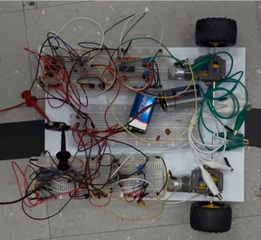
The analog line-following car, fully wired on twin breadboards, positioned over its one-inch guide lineThe car following the line under purely analog control
What I built
Built two operational-amplifier comparator circuits, one per photoresistor, that continuously compare each sensor's light-dependent voltage against a reference set by a potentiometer, converting the raw analog light readings into a differential steering signal with no microcontroller in the loop.
Tuned potentiometers to set the comparator thresholds and steering sensitivity, trading off aggressive correction, which risks oscillating off the line, against sluggish tracking, which risks losing it on a turn, until the car reliably held the one-inch line.
Used pulse-width modulation to control drive-motor speed directly from the analog steering signal, and separated the power system into a 12-volt lithium-ion battery dedicated to the two drive motors and dual 9-volt batteries dedicated to the operational-amplifier circuitry, isolating motor-driven electrical noise from the sensing electronics.
NASA Sensing our Planet: Explorations for Everyone in Science - Long Short-Term Memory Forecasting of Lake Water Volume from Satellite Data
NASA SEES Program
I built an automated pipeline to source and process satellite altimetry data for California lakes and reservoirs, then trained a model that predicts water volume years in advance, directly relevant to long-term water-crisis planning. The hard part was not the model; it was building a reliable, repeatable pipeline to turn raw satellite passes into a clean per-lake time series in the first place.
What I modeled and coded
Wrote Python scripts, largely through Google Colaboratory and QGIS's PyQGIS API, to automate sourcing and downloading ICESat-2 altimetry data from OpenAltimetry and the National Snow and Ice Data Center.
Extracted lake and reservoir boundaries across California by drawing bounding boxes and converting raster imagery into vector shapefiles, then used those shapefiles together with each ICESat-2 track's longitude and latitude data to find intersection points between the satellite path and the lake, sampling up to 100,000 water-elevation points per lake.
Trained a Long Short-Term Memory model on water-level measurements from five lakes, explicitly accounting for the sinusoidal seasonal fluctuations in the data, to predict water level and volume years in advance.
Skills
Long Short-Term Memory and time-series machine learning, Python, QGIS and PyQGIS, remote sensing (ICESat-2, Landsat)